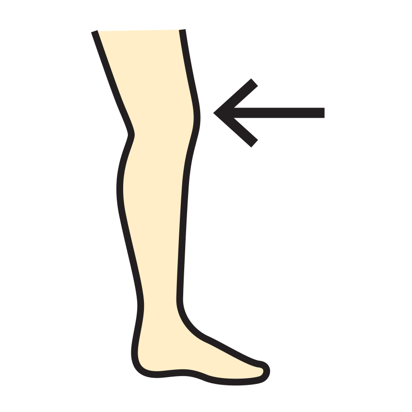

Consigne :1. Entoure les images qui riment avec HIBOU (tu entends « ou » à la fin). 2. Barre l’intrus : celui qui ne rime pas avec les autres. 3. Colorie l’image de la ligne qui rime avec le mot modèle.
1J’entoure si j’entends « ou » à la fin.
hibou
loup
caillou
renard
sapin

genou
2Je barre l’intrus qui ne rime pas avec les autres (marron, hérisson, champignon, écureuil).
marron
hérisson
champignon
écureuil
3
SAPIN
CANARD
Compétence : repérer des rimes ; trouver un intrus phonologique.A ☐ · EC ☐ · NE ☐
Prénom : Date :
Période 2 · Fiche élève 2
Lettres — capitale/script (éval. 2.4)
L’écureuil range ses noisettes
Consigne :1. Chaque grande lettre a sa petite lettre : relie chaque lettre capitale à la même lettre en écriture script. 2. Entoure sur chaque ligne le mot exactement identique au modèle.
★ Défi : écris toi-même la petite lettre script à côté de chaque capitale : E · O · S · I
Compétences : apparier capitale et script ; discriminer des mots proches.A ☐ · EC ☐ · NE ☐
Prénom : Date :
Période 2 · Fiche élève 3
Écriture cursive (éval. 2.5)
Mes premières lettres attachées
Consigne :1. Regarde le modèle écrit au début de chaque ligne et continue en écriture attachée. 2. Écris la ligne que la maîtresse dicte. 3. Entoure ta plus belle ligne.
1
modèle de la maîtresse : e
modèle : l
modèle : i · u · t
modèle : le · il · lit
2
Compétence : tracer e, l, i, u, t en cursive et les enchaîner.A ☐ · EC ☐ · NE ☐
Prénom : Date :
Période 2 · Fiche élève 4
Mathématiques — quantités ≤ 8 (éval. 2.8)
Les réserves de l’écureuil
Consigne :1. Compte les provisions et écris le chiffre. 2. L’écureuil veut 8 noisettes dans chaque panier : dessine des ronds pour compléter jusqu’à 8. 3. Complète les bandes numériques.
1Je compte et j’écris le chiffre.
2Je complète chaque panier pour avoir 8 noisettes.
Déjà dans le panier
Je dessine ce qui manque
En tout
8
8
8
3
1
3
5
7
★ Défi : l’écureuil a 2 paniers de 4 noisettes. Combien de noisettes en tout ?
Compétences : dénombrer jusqu’à 8 ; compléter une collection ; suite numérique.A ☐ · EC ☐ · NE ☐
Prénom : Date :
Période 2 · Fiche élève 5
Mathématiques — problèmes (éval. 2.9)
Les petits problèmes de la forêt
Consigne :1. L’écureuil avait 6 glands, il en a mangé 2 : barre les glands mangés, puis écris combien il en reste. 2. Le hérisson a ramassé 3 pommes, puis encore 4 : dessine-les, puis écris combien il en a en tout. 3. 7 cerfs boivent à la rivière, 3 s’en vont : barre-les et écris le reste. 4. Entoure l’animal qui a le plus de provisions.
1Je barre 2 glands mangés et j’écris combien il en reste.
Il reste : glands
2Je dessine 3 pommes puis encore 4 pommes, et j’écris le total.
En tout : pommes
3
Il reste cerfs.
4
Compétences : problèmes d’ajout et de retrait (≤ 8) ; comparaison.A ☐ · EC ☐ · NE ☐
Prénom : Date :
Période 2 · Fiche élève 6
Espace — coder un déplacement (éval. 2.10)
Le chemin du renard
Consigne :1. Suis le code des flèches avec ton crayon : trace le chemin du renard jusqu’à son terrier. 2. Invente le chemin du hérisson jusqu’à la pomme et écris ton code avec des flèches.
1Je trace le chemin du renard : → → ↓ → ↓
2J’invente le chemin du hérisson jusqu’à la pomme et j’écris mon code.
Mon code :
Compétence : coder et décoder un déplacement sur quadrillage.A ☐ · EC ☐ · NE ☐
Prénom : Date :
Période 2 · Fiche élève 7
Mathématiques — motifs (éval. 2.12)
Les guirlandes de la classe
Consigne :1. Continue chaque guirlande dans les cases vides. 2. Un lutin s’est trompé dans la dernière guirlande : entoure son erreur. 3. J’invente ma propre guirlande qui se répète.
1Je continue les guirlandes.
2J’entoure l’erreur du lutin.
3
Compétence : poursuivre un motif répétitif ; repérer une irrégularité ; créer un motif.A ☐ · EC ☐ · NE ☐
Crédits des images
Les illustrations de ce cahier sont des pictogrammes Mulberry Symbols (Paxtoncrafts Charitable Trust, licence CC BY-SA 4.0, mulberrysymbols.org) et des pictogrammes ARASAAC (auteur : Sergio Palao, propriété du Gouvernement d’Aragon, Espagne, licence CC BY-NC-SA, arasaac.org), complétés des images suivantes. Merci à leurs auteurs et autrices.
 hibou
hibou
 loup
loup
 caillou
caillou
 renard
renard
 sapin
sapin
 marron
marron
 hérisson
hérisson
 champignon
champignon
 écureuil
écureuil